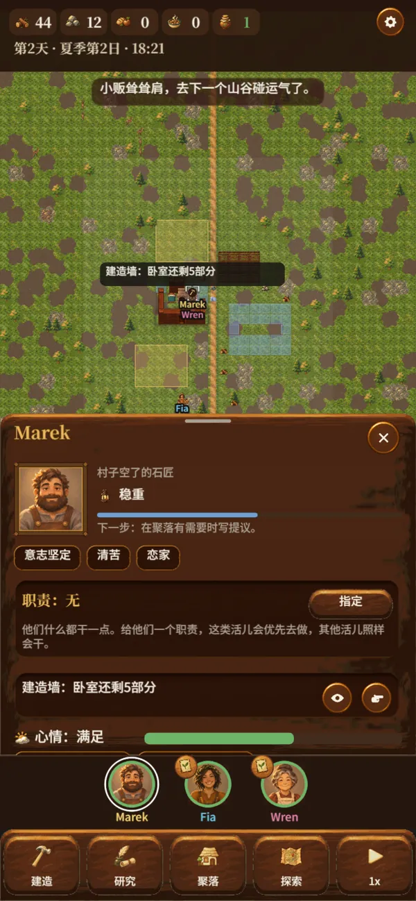
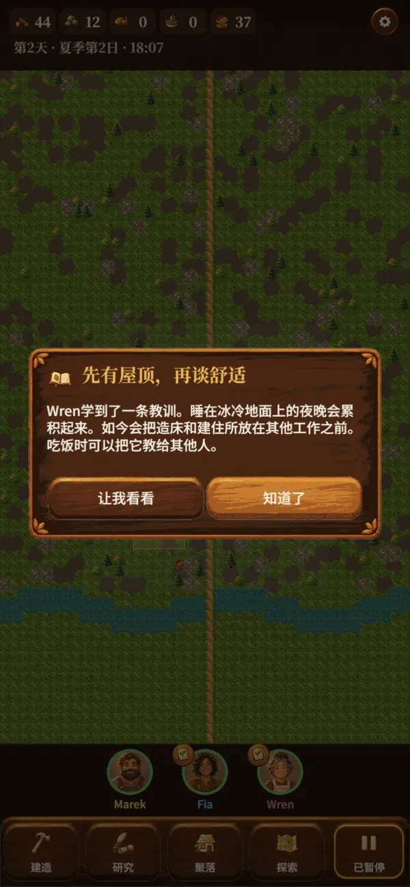
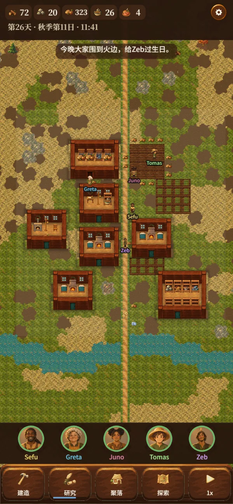
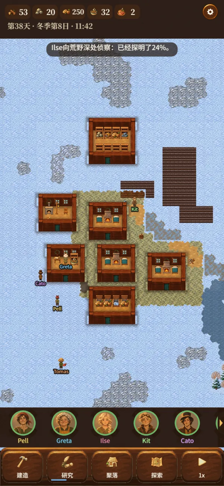
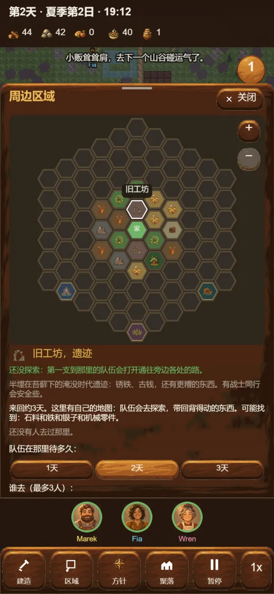
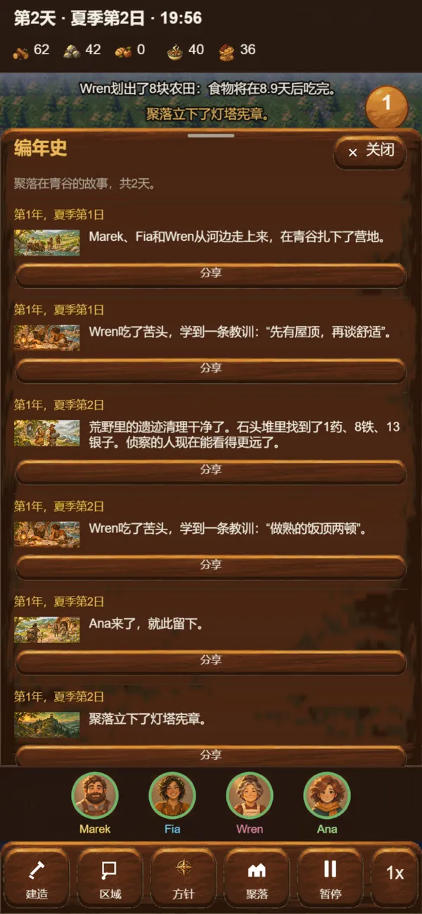

各有主见
点一下任何人，就知道他们在做什么、为什么。
每个定居者都会根据聚落的需要和自己在乎的事来挑活干：技能、性格、累不累、饿不饿、心里装着谁。他们的资料页会告诉你他们在做什么，又为什么这么做。
需要哪件事先办，就推他们一把。其余的不用你操心。

一款手机上的殖民地模拟游戏
带领一小群幸存者在荒野边疆建起家园。他们自己种地、盖房、拌嘴、相爱，也彼此守护。你来决定聚落看重什么，在要紧的时候出手。
竖屏，单手操作，随时可以暂停。玩五分钟或一整晚都行。
怎么玩
没有工作优先级表，也不用给每棵树下命令。定居者会自己发现问题、提前打算、主动去做。你的时间花在观察、决定和应对上。

各有主见
每个定居者都会根据聚落的需要和自己在乎的事来挑活干：技能、性格、累不累、饿不饿、心里装着谁。他们的资料页会告诉你他们在做什么，又为什么这么做。
需要哪件事先办，就推他们一把。其余的不用你操心。


以意图指挥
阅历最深的定居者会写提议：厨房、地窖、木栅栏，每一项都说明理由。点一下就能批准，也可以自己放下房间。还可以给每个人指派职责，从守卫到演说家；大家情绪低落时，就办一场宴席。
屋子靠壁炉取暖、靠灯笼照明，住进好房间，定居者会记在心里。

教训与阅历
在光地上冻了一夜，学会“先有屋顶，再谈舒适”；存粮坏了一批，学会“别让存粮晒太阳”。定居者把这些教训记在心里，吃饭时讲给别人听，阅历一季比一季深。贤者还能把濒临崩溃的人劝回来。


四季流转
夏天的青草渐渐枯黄，阔叶树染成金黄和赭红，又落尽叶子；雪从山上一点点漫下来，暖屋和道路旁的雪最先融化。到了春天，树又开满了花。
粮食会腐坏，壁炉要添柴，第一场雪会告诉你谁早有准备。定居者看到冬天要来，会自己着手准备过冬。

威胁
狼群、野猪和袭击者会从山上下来。得到袭击的警报后，定居者会自己加强防御。

山谷之外
聚落四周有废墟、草药林、猎场和荒山。小队会走进一张属于那里的地图，扎营、搜箱子、闯兽穴，能背多少就带回多少。每支小队的卡片会显示它走到了哪一程、什么时候到达。商队也会来到渡口做买卖。

值得讲述的故事
登陆、婚礼、反目、失去和九死一生，都会被记下来，每一条配着一幅画。从营地发展到家园、村庄和城镇，再去完成一份宪章：点亮古老的灯塔、建立城镇，或者带着所有人乘船远行。
然后带着上一个聚落的开拓者和传家宝，重新开始。
人物
三个人一起出发。其他人有的流浪而来，有的逃离被淹没的低地，有的在袭击之后被收留。每个人都有自己的技能、性格、热爱，以及和别人的牵绊。

曾经的摆渡人

村里的厨娘兼接生婆

村子空了的石匠

来自高山牧场的采药人

来自被淹没海岸的老灯塔看守

盐路上的商人

高地猎人

养蜂人，果园主的遗孀
他们会交朋友、结冤家、成亲、悲伤，也会记住发生过的事。
四座山谷
每座山谷都有自己的土地、季节、危险和宝藏。从青谷开始，其余的要靠成就解锁。

一片温和的山谷，草地肥沃，冬天也不冷。适合初来乍到的人。

冬天漫长，狼也来得早；但这里有群山中最好的木材、暖和的狼皮，还有终年不冻的温泉。

烈日下的平原，田地要靠打井，热浪会烤焦庄稼；但盐田能装满商队的口袋，古老的遗迹里满是铁。

群山中最肥沃的黑土，沼泽边长着野草药。但水边易生热病，沼泽还会淹没最近的田地。
六十个事件
讲述者掌握一年的节奏：商人和流浪者、暴风雪和热病、宴席和争吵。每个事件都给你一个选择；如果你让时间继续走，定居者会自己作答。


免费开始
每开一个新聚落，夏天、秋天和第一个冬天都免费，按正常速度大约三个小时。春天到来时，一次购买就能让这个聚落以及之后的每个聚落继续下去。
完整版通过 Google Play 一次性购买。没有订阅，没有体力限制，没有抽奖。
买到的是游戏的其余部分。它不卖速度，不卖资源，也不卖保护。
游戏可以离线玩，不收集任何个人信息。你的聚落保存在你的手机上。